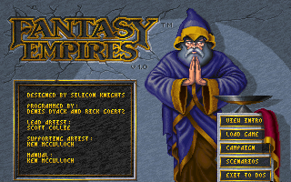
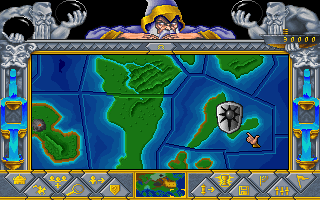

名稱：夢幻帝國／幻想帝國 (Fantasy Empires，英文版)
簡介：Silicon Knights 1993年出品的回合制策略遊戲，兼具角色扮演遊戲的元素，由SSI代
理發行，台灣則由智冠代理進口 [待補]。


備註：本版為1.1版
保護：手冊密碼，破解碼：
FANTASY.EXE
74 0A 83 7D 7E 03
EB -- -- -- -- --
85 F6 74 69 E8
-- -- EB -- --
備註：光碟版內容同磁片版1.1版。
備註：DosBox執行後若滑鼠無反應，請按Ctrl+F10強制使用滑鼠。